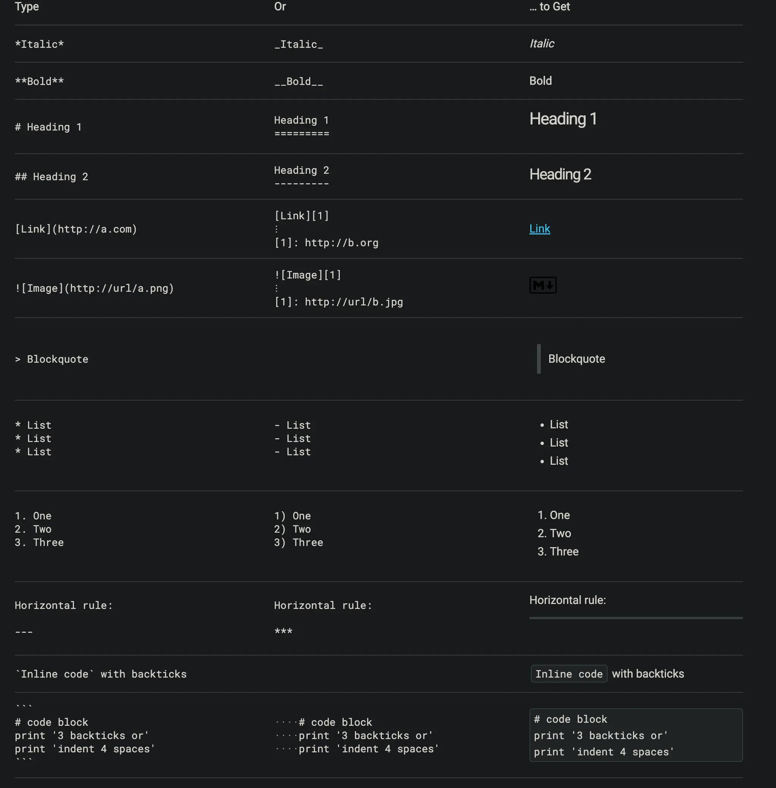
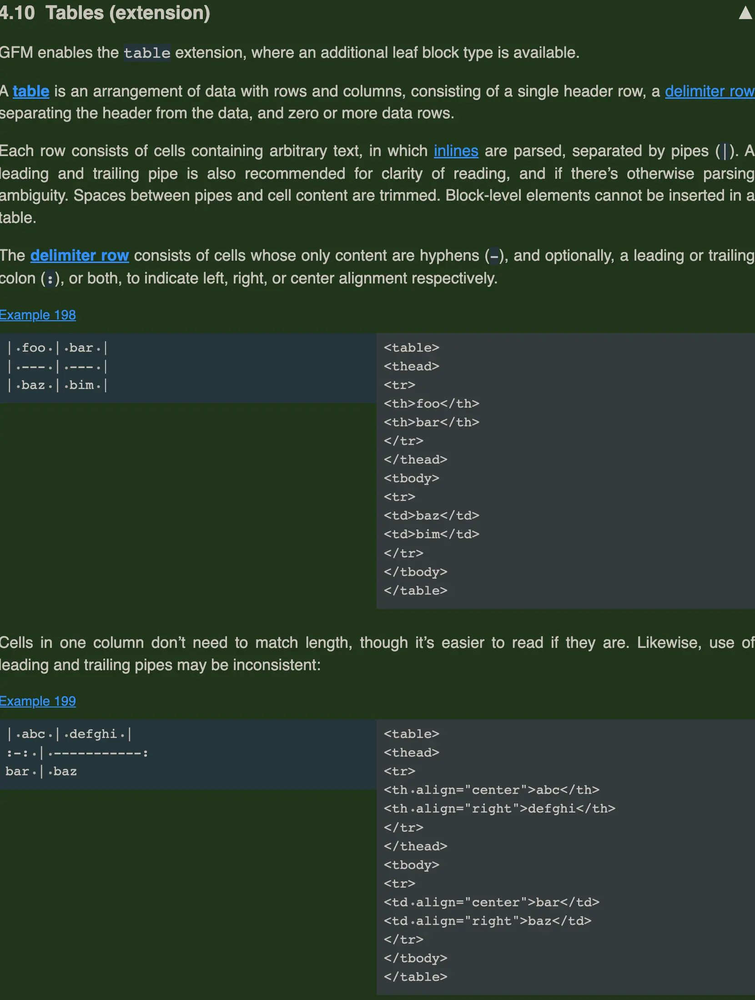
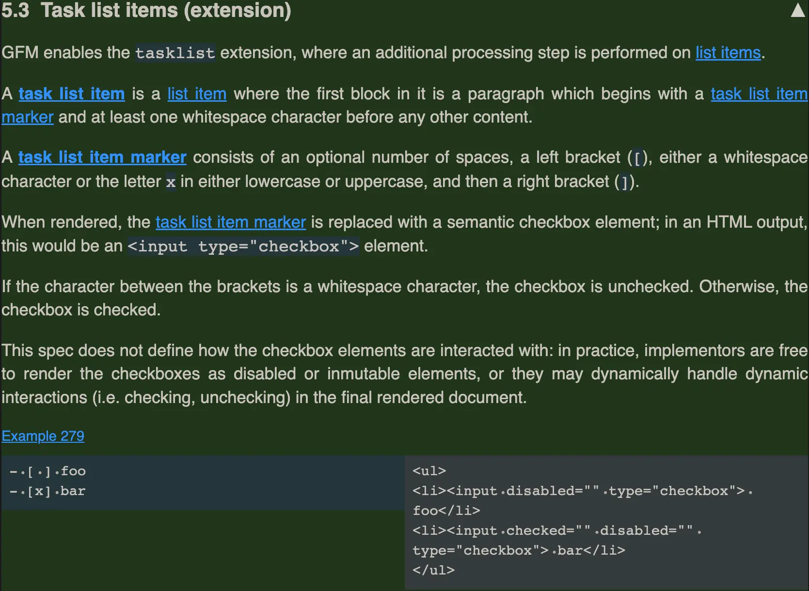
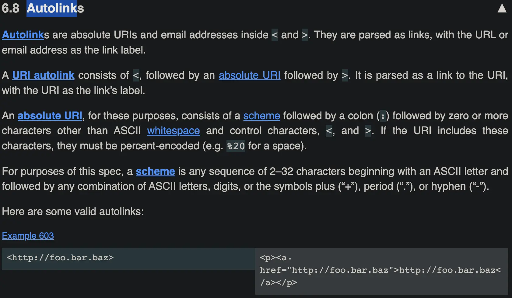
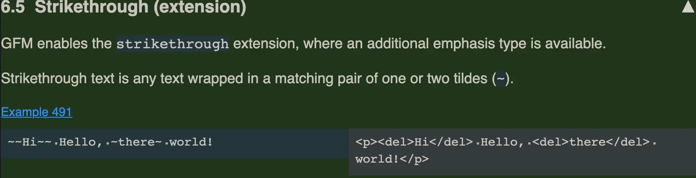

Markdown
AI 导读一分钟导读，先掌握全文主干。
核心观点
- CommonMark 0.31.2 仍是现行标准；GFM 扩展除表格外值得用的三件套
- emoji 用 ODE; 实体写法
- AI 时代的 Markdown：llms.txt 与 2026 现状
关键结论与取舍
- 语法以 CommonMark 为准，团队约定别自定义扩展
- llms.txt 让 Markdown 成为 AI 可读的站点入口，值得跟
标准化语法

github的扩展GFM




表情符号网站
语法：&#CODE; 其中，CODE 可以从 Emoji Unicode Tables 里查到。 例子：查到表情对应的 Unicode 编码是 U+1F34E，那这个表情对应的 CODE 就是 1F34E（去掉前面的 U+）。 只需在 Markdown 文档里输入
🍎，渲染后就会显示 🍎
笔记
-
+1 -
🍎
-
GitBook：写书 / 文档工具，插件生态丰富
-
Markdown Here：在 Gmail / Outlook 网页版直接写 Markdown 再渲染成富文本（项目已停止活跃维护，仍可用）
-
Pandoc：多种标记语言之间的「格式转换瑞士军刀」（Markdown / HTML / LaTeX / docx 互转）
-
Markdown 可以直接生成 PPT：Marp、Slidev、reveal.js 等，Marp 最简单
-
mdnice、doocs/md 等工具可以把 Markdown 一键转成微信公众号排版
-
石墨文档、腾讯文档、语雀等在线多人协作工具
-
MkDocs：用 Python 开发的静态站点生成器（配 Material 主题最流行）
Markdown 更新（2026）
旧小节罗列的 CommonMark / GFM / MDX / Obsidian 仍是主线，2026 年值得补充的现状是：规格层长期冻结、实现生态分层固化，以及 AI 时代 llms.txt 给 Markdown 带来的「第二春」。
规格层：CommonMark 0.31.2 仍是现行标准
- CommonMark 规范自 0.31.2（2022-01）后没再发布新版本，0.32 仍处草案阶段——语法的确定性是它成为事实标准的原因
- 参考实现 cmark（C）持续维护，cmark-gfm 是 GitHub 风味分支（cmark-gfm 命令可以单独安装做 CLI 渲染）
- 各语言实现的合规度是选型第一指标：「宣称 CommonMark」和「通过 spec 0.31.2 测试套件」是两回事
GFM 扩展面：除表格外值得用的三件套
GitHub Flavored Markdown 在 CommonMark 之上加的扩展里，除了表格、任务列表、删除线，2026 年实际高频使用的是：
- 自动链接（Autolink）——裸 URL 自动成链接，规范宽松度大于 CommonMark
- 脚注（Footnotes）——
[^1]注释，长文档里占比越来越高 - 提示块（GFM Alerts）——
> [!NOTE]、> [!WARNING]等，注意：alerts 是 GitHub 扩展而非 GFM spec 正式项，跨平台渲染不一致（2026-01 仍有解析器在修 alert 正则的边界行为）
| 解析器（语言） | 说明 |
|---|---|
| cmark / cmark-gfm（C） | 参考实现，性能标杆 |
| comrak（Rust） | CommonMark + GFM 全兼容，扩展项最丰富（alerts/footnotes/math-dollars 等） |
| goldmark（Go） | Go 生态事实标准，Hugo 内部渲染器 |
| markdown-it（JS） | 前端事实标准，插件生态最大，mdast/remark 偏 AST 处理 |
| marko / mistune（Python） | Python 侧活跃实现，marko 依 spec 0.31.2 |
AI 时代的 Markdown：llms.txt 与 2026 现状
2024 年 Jeremy Howard（fast.ai / Answer.AI）提出 llms.txt：网站根目录放一个 Markdown 格式的「给 AI 的说明书」（H1 标题 + blockquote 摘要 + 链接清单），让 GPTBot、ClaudeBot 等 AI 爬虫优先理解站点结构和权威内容，被誉为 AI 时代的 robots.txt。到 2026 年的现实是：
- 采用方：Cloudflare、Anthropic、Perplexity、Cursor 等已实施；微信支付 2026-04 宣布商户文档新增 llms.txt
- AI 侧态度分化：Anthropic 明确支持；OpenAI 爬虫会访问但未确认使用；Google 明确声明不支持，并在 2026-06 确认 llms.txt 不是搜索 / AI Mode 的 ranking signal
- 争议：支持者认为它减少抓取浪费和幻觉；质疑者认为缺证据、可能沦为 SEO 垃圾场
务实做法：llms.txt 成本极低（生成器遍地都是），值得配上；但别指望它带来搜索收益——它做的是「给 AI 一个更准的入口」，配好 sitemap 和内容质量才是根本。